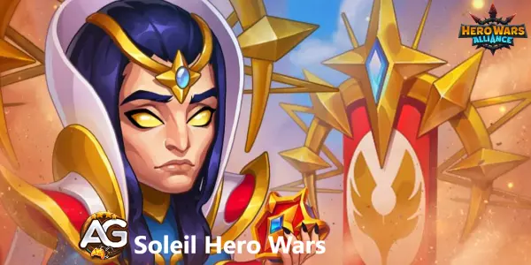
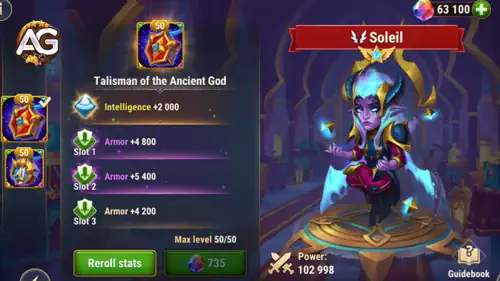
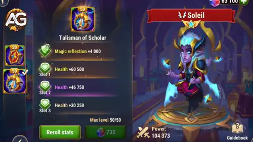

Soleil é um dos heróis de suporte mais estratégicos em Hero Wars Alliance, combinando proteção, controle e suporte baseado em magia. Perfeito para enfrentar equipes com alto dano mágico.
Com talismãs poderosos e sinergias únicas, Soleil pode mudar o rumo da batalha. Neste guia, você aprenderá a maximizar seu potencial tanto em lutas PvP quanto em missões difíceis da campanha.

| Papel | Suporte |
|---|---|
| Facção | Caminho da Honra |
| Posição | Linha do Meio |
| Principal Estatística | Inteligência |
| Sinergias | Heróis do Caminho da Honra: Especialmente Qing Mao, Markus e Ishmael. |
| Tier list 2025 | Classificação |
|---|---|
| Tier List Geral: | S+ |
| Tier List da Hidra: | A+ |
Soleil é um poderoso sacerdote que conseguiu derrotar até mesmo uma divindade e agora está pronto para se juntar às fileiras dos Guardiões na batalha contra o caos. Refletir efeitos de controle, enfraquecer inimigos e fortalecer aliados tornam Soleil uma parte vital de qualquer equipe.
Descrição: Lança a Maldição do Deus Antigo no inimigo mais próximo por um certo período de tempo, roubando Armadura e Defesa Mágica deles e causando dano. A Armadura e Defesa Mágica roubadas do inimigo são temporariamente distribuídas uniformemente entre todos os aliados.
Dicas: Use esta habilidade para enfraquecer tanques inimigos fortes e aumentar a defesa geral de sua equipe. O momento certo para usar essa habilidade pode enfraquecer significativamente os heróis da linha de frente inimiga, facilitando a penetração dos defensores por seus causadores de dano.
Descrição: Envolve temporariamente o aliado mais à frente em um Halo mágica, reduzindo o dano que eles recebem. O aliado com o Halo não pode ser atordoado, cegado ou silenciado. Se um inimigo tentar atordoar, cegar ou silenciar o aliado com Halo, o efeito será refletido de volta para o inimigo por 3 segundos.
Dicas: Use Halo no seu tanque principal ou em qualquer herói crucial da linha de frente para garantir que eles permaneçam na luta por mais tempo e evitem ser controlados. Essa habilidade é particularmente eficaz contra equipes que dependem fortemente de habilidades de controle.
Descrição: Aplica a Marca do Deus Antigo ao inimigo central por um certo período de tempo. O inimigo recebe dano a cada uso de suas habilidades e recebe dano adicional por usar habilidades de controle contra heróis.
Dicas: Alvo o principal causador de dano ou herói de controle do inimigo com esta marca para puni-los pelo uso de suas habilidades. Essa habilidade pode atrapalhar a estratégia do inimigo e forçá-los a repensar sua abordagem.
Descrição: Aumenta temporariamente o dano de ataques físicos e mágicos, bem como a cura, para todos os aliados à frente de Soleil. Além disso, aumenta o dano e a cura para cada habilidade de controle aplicada pelos inimigos desde o início da batalha.
Dicas: Posicione Soleil estrategicamente para que o máximo de aliados se beneficie deste buff. Esta habilidade escala com o número de habilidades de controle usadas pelo inimigo, tornando-a mais eficaz em batalhas prolongadas.
Dica Extra: Usar Soleil contra inimigos com as habilidades de controle listadas na tabela abaixo, criada por Alexandre Games, beneficiará sua equipe nas batalhas. A habilidade Bênção do Deus Antigo de Soleil transforma as habilidades de controle dos inimigos em vantagens para sua equipe, aprimorando suas opções estratégicas e melhorando suas chances de vitória.
| Personagens | Números das Habilidades |
|---|---|
| Andvari | 1,3 |
| Arachne | 1,3 |
| Astrid | 1,4 |
| Aurora | 2 |
| Chabba | 1 |
| Machadinha | 2,3 |
| Cogu e Mélio | 2 |
| Dante | 1,3 |
| Dilúvio | 1,2 |
| Estrela Sombria | 2 |
| Fafnir | 1,4 |
| Fox | 1,4 |
| Galahad | 2 |
| Ginger | 2 |
| Isaac | 4 |
| Ishmael | 4 |
| Jorgen | 1 |
| Juiz | 4 |
| Kai | 1 |
| Karkh | 1 |
| Keira | 1 |
| Lara Croft | 3 |
| Lars | 3,4 |
| Lian | 1,4 |
| Luther | 1,2,3 |
| Mojo | 3 |
| Oya | 2 |
| Orion | 3 |
| Peppy | 1,3 |
| Phobos | 1 |
| Qing Mao | 1 |
| Sem Rosto | 2 |
| Thea | 3 |
| Yasmine | 4 |
| Ziri | 4 |
Emparelhe Soleil com heróis como Qing Mao, Markus e Ishmael para maximizar a sinergia dentro da facção Caminho da Honra. Esses heróis podem se beneficiar enormemente dos buffs e da proteção de Soleil.
Como um herói da linha do meio, Soleil deve ser colocado onde possa apoiar efetivamente tanto os heróis da linha de frente quanto os da linha de fundo. Certifique-se de que ele esteja protegido o suficiente para aplicar seus buffs e debuffs.
Concentre-se em aumentar a Inteligência de Soleil para melhorar seu poder de ataque mágico e sua eficácia geral. Priorize o aumento dos níveis dos artefatos para tornar suas habilidades mais impactantes.
Ao aproveitar as habilidades únicas de Soleil para enfraquecer inimigos e fortalecer aliados, você pode virar o jogo a seu favor. Use suas habilidades estrategicamente para atrapalhar os planos inimigos e fortalecer sua equipe, tornando Soleil uma parte indispensável da sua formação na Hero Wars Alliance.
O Talismã de Soleil é um divisor de águas em Hero Wars Alliance, aumentando significativamente suas defesas mágicas e físicas. O impulso substancial em Inteligência não apenas aumenta seu ataque mágico, mas também melhora sua defesa mágica, tornando-o um herói mais versátil, capaz tanto de atacar quanto de se defender. Os pontos adicionais de armadura da habilidade Repetição reforçam ainda mais seu papel como defensor resiliente.
A combinação de maior Inteligência e Armadura torna Soleil um oponente formidável nas batalhas. Sua capacidade de causar dano mágico considerável enquanto resiste a ataques mágicos e físicos garante que ele possa se manter firme e proteger seus aliados de forma eficaz. Isso o torna um recurso inestimável em várias composições de equipe, especialmente aquelas que exigem equilíbrio entre ataque e defesa.

| Slot | Estatísticas | Pontos |
|---|---|---|
| 0 | Inteligência | 2000 |
| 1 | Armadura | 6600 |
| 2 | Armadura | 6600 |
| 3 | Armadura | 6600 |
O Talismã de Soleil aprimora significativamente suas capacidades, tornando-o um herói completo em Hero Wars Alliance. Os aumentos em inteligência e armadura fornecem as ferramentas necessárias para dominar nas batalhas, fazendo dele uma escolha de primeira linha para jogadores que desejam fortalecer suas equipes.
O Talismã do Erudito é uma melhoria poderosa para Soleil em Hero Wars Alliance, oferecendo dois benefícios principais: Reflexão Mágica e um aumento significativo na Vida. Ele concede uma base de +4.000 em Reflexão Mágica e um total impressionante de +181.500 em Vida distribuídos em três slots (+60.500 cada), melhorando muito a durabilidade de Soleil em combate.
A mecânica central da Reflexão Mágica permite que Soleil esquive completamente de certos ataques mágicos e reflita 20% do dano de volta ao lançador. Essa reflexão ocorre sem que Soleil sofra qualquer dano ao ser ativada. A chance de ativação é calculada pela fórmula: (Reflexão Mágica / (Reflexão Mágica + estatística principal do inimigo)) × 100%. Isso significa que quanto maior a Reflexão Mágica de Soleil em comparação com a estatística principal do inimigo (geralmente Inteligência), maior a chance de refletir o dano.

Uma grande vantagem desse efeito é que ele é ativado mesmo quando Soleil está Atordoado, tornando-o um suporte confiável mesmo sob controle de grupo. No entanto, ele não é ativado se Soleil estiver Silenciado. Isso faz da Reflexão Mágica uma ferramenta estratégica contra equipes focadas em magia, especialmente contra inimigos como Iris ou Xe'Sha.
Comparado ao seu talismã anterior, que foca em Inteligência e Defesa, o Talismã do Erudito oferece uma utilidade geral melhor, tornando Soleil muito mais difícil de derrotar — especialmente nas batalhas de Arena de alto nível, onde a sobrevivência é crucial. É uma escolha forte para jogadores que desejam otimizar Soleil como suporte e especialista em contra-magia.
Utilize as habilidades de Soleil para contra-atacar as táticas de controle dos inimigos. Habilidades como Halo e Marca do Deus Antigo podem refletir e punir as habilidades de controle dos inimigos, desestabilizando sua estratégia e dando vantagem ao seu time.
Arachne:
Habilidade: Arachne pode atordoar e lançar os inimigos ao ar.
Contramedida: Aplique Halo para proteger seu herói da linha de frente dos atordoamentos e lançamentos de Arachne. Isso refletirá esses efeitos de volta para Arachne, reduzindo sua eficácia.
Juiz:
Habilidade: Juiz pode atordoar e desacelerar os inimigos.
Contramedida: Com a Marca do Deus Antigo, você pode mirar no Juiz para puni-lo por usar suas habilidades de controle, fazendo-o sofrer dano adicional e pensar duas vezes antes de usar suas habilidades de controle.
Phobos:
Habilidade: Phobos pode causar medo e controlar heróis inimigos.
Contramedida: Halo pode evitar efeitos de medo em seu tanque principal ou heróis da linha de frente. Qualquer tentativa de Phobos de instilar medo será refletida de volta para ele.
Sem Rosto:
Habilidade: Sem Rosto pode atordoar e copiar habilidades.
Contramedida: A habilidade Halo pode ser usada para enfraquecer Sem Rosto, reduzindo sua capacidade de controlar sua equipe de forma eficaz. Os efeitos de Halo irão atordoar Sem Rosto de volta, assim aumenta a resiliência da sua equipe contra as habilidades dele.
Peppy:
Habilidade: Peppy pode encantar e controlar inimigos.
Contramedida: Halo protegerá contra o encanto de Peppy, refletindo-o de volta para ela. A Bênção do Deus Antigo pode beneficiar os aliados de Soleil quando Peppy usar suas habilidades de controle, causando dano adicional e cura.
Jorgen:
Habilidade: Jorgen pode roubar energia e aplicar efeitos de controle de multidão.
Contramedida: Use Halo para prevenir o roubo de energia e os efeitos de controle em seus heróis principais. Marca do Deus Antigo também pode ser usada para garantir que Jorgen receba dano extra na linha do meio por usar suas habilidades de controle.
Andvari:
Habilidade: Andvari pode atordoar e controlar os inimigos com o Agarrão de Pedra.
Contramedida: Halo protege contra os efeitos de atordoamento e prisão do Grasp de Pedra, refletindo-os de volta para Andvari. A Maldição do Deus Antigo reduz suas defesas, tornando-o mais fácil de eliminar.
Lian:
Habilidade: Lian pode encantar e adormecer os inimigos.
Contramedida: Halo protege seus heróis dos efeitos de encanto e sono, refletindo-os de volta para Lian. A Bençao do Deus Antigo pode beneficiar os aliados de Soleil quando Lian usar suas habilidades de controle.
As melhores equipes para Soleil em Hero Wars Alliance foram formadas com base em testes extensivos no evento Hero Battles no nível máximo, conduzidos por Alexandre Domingos. Essas composições foram projetadas para maximizar os pontos fortes de Soleil e oferecer vantagens estratégicas em diversos cenários, garantindo desempenho ideal e sinergia entre os membros da equipe.
As habilidades de Soleil fornecem contramedidas robustas contra cada herói de controle, usando Halo para refletir e anular os efeitos de controle, a Marca do Deus Antigo para punir habilidades de controle e a Maldição do Deus Antigo para enfraquecer e roubar defesas. Ao utilizar essas habilidades estrategicamente, Soleil pode reduzir significativamente o impacto dos heróis de controle em Hero Wars Alliance.
Você gostou do nosso Guia do Soleil para Hero Wars Mobile? Há algo que não entendeu ou gostaria de sugerir mudanças? Convidamos você a se juntar à nossa sessão de comentários na página do Alexandre Games Blog. Não hesite em expressar sua opinião, clarificar suas dúvidas e compartilhar sua sugestões.
Clique no botão abaixo para começar:

 Hero Wars") Skins Demoníacas: Soleil+ Ishmael Fafnir
Skins Demoníacas: Soleil+ Ishmael Fafnir